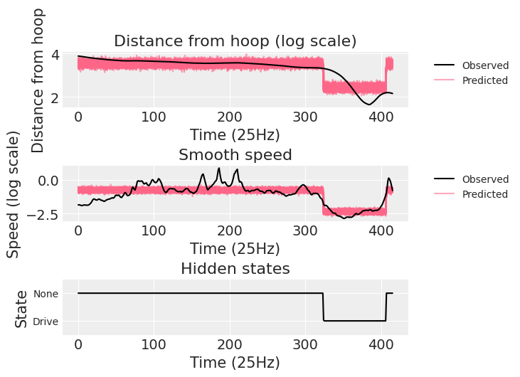

CmdStanPy and ArviZ integration#
This blog post is an adaptation of the Tagging Basketball Events with HMM in Stan case study. It will not cover any new topics or analysis and assumes you have at least skimmed the original case study.
So what is this post about? I will use cmdstanpy+ArviZ integration to show the potential of using labeled arrays when doing exploratory analysis of Bayesian models. I will use xarray’s automatic broadcasting and alignment of arrays and the stats module of xarray-einstats for posterior predictive sampling.
Each section maps to an example on the original case study: simple HMM example, tagging drive events and defensive assignment. All sections follow the same structure.
The beginning is as concise as possible to avoid duplication: the data needed for the model is read, the model is compiled and sampled. If you are interested you’ll be able to read the stan code of the model clicking on the «Show Output» buttons. We then move to the target of this blog post: conversion of the cmdstanpy fit to ArviZ InferenceData and postprocessing with xarray and xarray-einstats.
import cmdstanpy
import pandas as pd
import arviz as az
import numpy as np
import matplotlib.pyplot as plt
import xarray as xr
az.style.use("arviz-darkgrid")
Simple HMM example#
Link to this same section in the original Stan case study.
hmm_data = pd.read_csv("data/hmm_example.csv")
Click the button below to see the Stan code:
Show code cell content
with open("stan_codes/hmm_example.stan", "r") as f:
print(f.read())
// simple hmm example (1 output; 2 states)
data {
int<lower=0> N;
int<lower=0> K;
real y[N];
}
parameters {
simplex[K] theta[K];
// real mu[K];
positive_ordered[K] mu;
}
model {
// priors
target+= normal_lpdf(mu[1] | 3, 1);
target+= normal_lpdf(mu[2] | 10, 1);
// forward algorithm
{
real acc[K];
real gamma[N, K];
for (k in 1:K)
gamma[1, k] = normal_lpdf(y[1] | mu[k], 1);
for (t in 2:N) {
for (k in 1:K) {
for (j in 1:K)
acc[j] = gamma[t-1, j] + log(theta[j, k]) + normal_lpdf(y[t] | mu[k], 1);
gamma[t, k] = log_sum_exp(acc);
}
}
target += log_sum_exp(gamma[N]);
}
}
generated quantities {
int<lower=1,upper=K> z_star[N];
real log_p_z_star;
{
int back_ptr[N, K];
real best_logp[N, K];
for (k in 1:K)
best_logp[1, k] = normal_lpdf(y[1] | mu[k], 1);
for (t in 2:N) {
for (k in 1:K) {
best_logp[t, k] = negative_infinity();
for (j in 1:K) {
real logp;
logp = best_logp[t-1, j] + log(theta[j, k]) + normal_lpdf(y[t] | mu[k], 1);
if (logp > best_logp[t, k]) {
back_ptr[t, k] = j;
best_logp[t, k] = logp;
}
}
}
}
log_p_z_star = max(best_logp[N]);
for (k in 1:K)
if (best_logp[N, k] == log_p_z_star)
z_star[N] = k;
for (t in 1:(N - 1))
z_star[N - t] = back_ptr[N - t + 1, z_star[N - t + 1]];
}
}
model = cmdstanpy.CmdStanModel(stan_file="stan_codes/hmm_example.stan")
INFO:cmdstanpy:found newer exe file, not recompiling
stan_data = dict(N = len(hmm_data), K = 2, y = hmm_data["y"])
hmm_fit = model.sample(data = stan_data)
INFO:cmdstanpy:CmdStan start processing
INFO:cmdstanpy:CmdStan done processing.
Conversion to InferenceData#
To convert a CmdStanPy fit to InferenceData, only the CmdStanMCMC object is needed. However, to make the most out of ArviZ and xarray features, the dimensions of each variable should also be provided.
Optionally, you can also give coordinate values to some of the dimensions. The dimensions without coordinate values provided are initialized with integers starting from 0 as their coordinate values.
Dimensions are provided as a dictionary whose keys are variable names and whose values are a list with the dimension names.
Coordinates are provided as a dictionary whose keys are now dimension names, and whose values are coordinate values.
states = [1, 2]
idata = az.from_cmdstanpy(
hmm_fit,
dims={"theta": ["origin_state", "end_state"], "mu": ["state"], "z_star": ["time"]},
coords={"state": states, "origin_state": states, "end_state": states}
)
idata
Inference data with groups: > posterior > sample_stats
We have now created an InferenceData object with two groups, the posterior (shown below) contains all posterior samples, and the sample_stats one contains sampler information like the log probability, which samples are divergent or the treedepth.
Each group is an xarray.Dataset. As you can see, Datasets have dimensions, coordinates, data variables and attributes. When printed (either as text or as html repr) each element has its own section with the relevant information.
The dimensions section lists all the dimensions and their lenghts. There we can quickly see that we have 2 states, and have sampled 1000 draws in 4 independent chains…
The coordinates section lists information in the following order: coordinate name, dimension name, type of coordinate values and coordinate values. Moreover, in the beginning there can be an * which indicates it is an indexing coordinate. With indexing coordinates, you can use .sel method on either InferenceData or Dataset to select a subset of the data using coordinate values.
The data variables lists: variables name, dimensions, type and values. Each variable, stored as a DataArray object, is independent of the others. They can have any of the dimensions of the Dataset and in any order.
The attributes section lists Dataset level attributes. By default, ArviZ adds some attributes to give an idea of how the data was generated.
idata.posterior
<xarray.Dataset>
Dimensions: (chain: 4, draw: 1000, origin_state: 2, end_state: 2,
state: 2, time: 100)
Coordinates:
* chain (chain) int64 0 1 2 3
* draw (draw) int64 0 1 2 3 4 5 6 7 ... 993 994 995 996 997 998 999
* origin_state (origin_state) int64 1 2
* end_state (end_state) int64 1 2
* state (state) int64 1 2
* time (time) int64 0 1 2 3 4 5 6 7 8 ... 91 92 93 94 95 96 97 98 99
Data variables:
theta (chain, draw, origin_state, end_state) float64 0.537 ... 0....
mu (chain, draw, state) float64 3.335 8.763 2.639 ... 3.078 8.938
z_star (chain, draw, time) float64 1.0 2.0 2.0 2.0 ... 2.0 2.0 2.0
log_p_z_star (chain, draw) float64 -166.1 -166.9 -166.3 ... -167.1 -166.0
Attributes:
created_at: 2022-04-24T22:54:42.066604
arviz_version: 0.12.0
inference_library: cmdstanpy
inference_library_version: 1.0.1Diagnostics#
arviz.summary gives an overview of the fit with both summary statistics and diagnostics.
az.summary(idata, var_names=["theta", "mu"])
| mean | sd | hdi_3% | hdi_97% | mcse_mean | mcse_sd | ess_bulk | ess_tail | r_hat | |
|---|---|---|---|---|---|---|---|---|---|
| theta[1, 1] | 0.668 | 0.100 | 0.479 | 0.846 | 0.002 | 0.001 | 3107.0 | 2035.0 | 1.0 |
| theta[1, 2] | 0.332 | 0.100 | 0.154 | 0.521 | 0.002 | 0.001 | 3107.0 | 2035.0 | 1.0 |
| theta[2, 1] | 0.073 | 0.029 | 0.024 | 0.126 | 0.001 | 0.000 | 2718.0 | 1969.0 | 1.0 |
| theta[2, 2] | 0.927 | 0.029 | 0.874 | 0.976 | 0.001 | 0.000 | 2718.0 | 1969.0 | 1.0 |
| mu[1] | 3.016 | 0.221 | 2.613 | 3.432 | 0.005 | 0.003 | 2012.0 | 2147.0 | 1.0 |
| mu[2] | 8.828 | 0.111 | 8.611 | 9.032 | 0.002 | 0.001 | 4296.0 | 3005.0 | 1.0 |
We can customize the appearance of the summary with the labeller argument. The arviz.labels module includes some common labeller classes. The default is showing only variable name and coordinate values. We will now use the DimCoordLabeller to show also the dimension name:
az.summary(idata, var_names=["theta", "mu"], labeller=az.labels.DimCoordLabeller())
| mean | sd | hdi_3% | hdi_97% | mcse_mean | mcse_sd | ess_bulk | ess_tail | r_hat | |
|---|---|---|---|---|---|---|---|---|---|
| theta[origin_state: 1, end_state: 1] | 0.668 | 0.100 | 0.479 | 0.846 | 0.002 | 0.001 | 3107.0 | 2035.0 | 1.0 |
| theta[origin_state: 1, end_state: 2] | 0.332 | 0.100 | 0.154 | 0.521 | 0.002 | 0.001 | 3107.0 | 2035.0 | 1.0 |
| theta[origin_state: 2, end_state: 1] | 0.073 | 0.029 | 0.024 | 0.126 | 0.001 | 0.000 | 2718.0 | 1969.0 | 1.0 |
| theta[origin_state: 2, end_state: 2] | 0.927 | 0.029 | 0.874 | 0.976 | 0.001 | 0.000 | 2718.0 | 1969.0 | 1.0 |
| mu[state: 1] | 3.016 | 0.221 | 2.613 | 3.432 | 0.005 | 0.003 | 2012.0 | 2147.0 | 1.0 |
| mu[state: 2] | 8.828 | 0.111 | 8.611 | 9.032 | 0.002 | 0.001 | 4296.0 | 3005.0 | 1.0 |
Further guidance on sorting and customizing ArviZ labels can be found in the ArviZ label guide
Posterior predictive sampling#
Following the case study, we will perform posterior predictive sampling in Python instead of in the generated_quantities block of Stan. We will use xarray-einstats to generate the random samples from xarray objects.
from xarray_einstats.stats import XrContinuousRV
from scipy.stats import norm
post = idata.posterior
psi_seq = post["mu"].sel(state=post["z_star"])
# the conversion to dataset is for dislpay reasons only
psi_seq.to_dataset(name="psi_seq")
<xarray.Dataset>
Dimensions: (chain: 4, draw: 1000, time: 100)
Coordinates:
* chain (chain) int64 0 1 2 3
* draw (draw) int64 0 1 2 3 4 5 6 7 8 ... 992 993 994 995 996 997 998 999
state (chain, draw, time) int64 1 2 2 2 2 2 2 2 2 2 ... 2 2 2 2 2 2 2 2 2
* time (time) int64 0 1 2 3 4 5 6 7 8 9 ... 90 91 92 93 94 95 96 97 98 99
Data variables:
psi_seq (chain, draw, time) float64 3.335 8.763 8.763 ... 8.938 8.938 8.938When we do .sel(state=DataArray) we are telling xarray to use the values in the provided DataArray as labels with which to index the state dimension. xarray takes care of aligning and broadcasting the dimensions for the indexing to work and generates the desired 3d array with chain, draw and time dimensions.
With the means that correspond to each posterior predictive sample, we need to generate random draws from a normal with mean mu and standard deviation 1.
xarray-einstats provides the XrContinuousRV class to wrap SciPy distributions and have them take DataArrays as inputs.
We can then generate the distribution and generate the random samples with the rvs method like we would do with SciPy. The to_dataset method is called so we can then add the data as a new group to our InferenceData.
idata.add_groups(posterior_predictive=XrContinuousRV(norm, psi_seq, 1).rvs().to_dataset(name="y"))
print(idata)
idata.posterior_predictive
Inference data with groups:
> posterior
> posterior_predictive
> sample_stats
<xarray.Dataset>
Dimensions: (chain: 4, draw: 1000, time: 100)
Coordinates:
* chain (chain) int64 0 1 2 3
* draw (draw) int64 0 1 2 3 4 5 6 7 8 ... 992 993 994 995 996 997 998 999
state (chain, draw, time) int64 1 2 2 2 2 2 2 2 2 2 ... 2 2 2 2 2 2 2 2 2
* time (time) int64 0 1 2 3 4 5 6 7 8 9 ... 90 91 92 93 94 95 96 97 98 99
Data variables:
y (chain, draw, time) float64 3.875 9.168 8.93 ... 8.58 7.509 8.855Before plotting we will use the extract_dataset function to get a random subset of 100 samples. Plotting the 4000 samples we have available would be excessive and not add any information to the plot.
pp_subset = az.extract_dataset(idata, group="posterior_predictive", num_samples=100)
_, ax = plt.subplots()
ax.plot(hmm_data["y"], "k-", zorder=3, label="Observed")
ax.set_title("Observed vs Predicted Output")
ax.set_ylabel("Observation Value")
ax.set_xlabel("Time")
ax.plot(pp_subset["y"], color="#ff668890", alpha=.2)
ax.plot([], [], color="#ff668890", label="Predicted")
ax.legend();
Tagging Drive Events#
Link to this same section in the original Stan case study.
df = pd.read_csv("data/evt140_0021500411.csv")
Show code cell content
with open("stan_codes/drive_1.stan", "r") as f:
print(f.read())
// drive model (normal dist)
data {
int<lower=1> K; // number of states (1 = none, 2 = drive)
int<lower=1> N; // length of process
real u[N]; // 1/speed
real v[N]; // hoop distance
matrix<lower=0>[K,K] alpha; // transit prior
real<lower=0> tau; // sd u
real<lower=0> rho; // sd v
}
parameters {
simplex[K] theta[K]; // transit probs
// enforce an ordering: phi[1] <= phi[2]
ordered[K] phi; // emission parameter for 1/speed
ordered[K] lambda; // emission parameter for hoop dist
}
model {
// priors
for (k in 1:K)
target += dirichlet_lpdf(theta[k] | alpha[k,]');
target+= normal_lpdf(phi[1] | 0, 1);
target+= normal_lpdf(phi[2] | 3, 1);
target+= normal_lpdf(lambda[1] | 0, 1);
target+= normal_lpdf(lambda[2] | 3, 1);
// forward algorithm
{
real acc[K];
real gamma[N,K];
for (k in 1:K)
gamma[1,k] = normal_lpdf(u[1] | phi[k], tau) + normal_lpdf(v[1] | lambda[k], rho);
for (t in 2:N) {
for (k in 1:K) {
for (j in 1:K)
acc[j] = gamma[t-1,j] + log(theta[j,k]) + normal_lpdf(u[t] | phi[k], tau) + normal_lpdf(v[t] | lambda[k], rho);
gamma[t,k] = log_sum_exp(acc);
}
}
target+= log_sum_exp(gamma[N]);
}
}
generated quantities {
int<lower=1,upper=K> z_star[N];
real log_p_z_star;
// Viterbi algorithm
{
int back_ptr[N,K];
real best_logp[N,K];
for (k in 1:K)
best_logp[1,K] = normal_lpdf(u[1] | phi[k], tau) + normal_lpdf(v[1] | lambda[k], rho);
for (t in 2:N) {
for (k in 1:K) {
best_logp[t,k] = negative_infinity();
for (j in 1:K) {
real logp;
logp = best_logp[t-1,j] + log(theta[j,k]) + normal_lpdf(u[t] | phi[k], tau) + normal_lpdf(v[t] | lambda[k], rho);
if (logp > best_logp[t,k]) {
back_ptr[t,k] = j;
best_logp[t,k] = logp;
}
}
}
}
log_p_z_star = max(best_logp[N]);
for (k in 1:K)
if (best_logp[N,k] == log_p_z_star)
z_star[N] = k;
for (t in 1:(N - 1))
z_star[N - t] = back_ptr[N - t + 1, z_star[N - t + 1]];
}
}
model = cmdstanpy.CmdStanModel(stan_file="stan_codes/drive_1.stan")
INFO:cmdstanpy:found newer exe file, not recompiling
drive_fit = model.sample(data = stan_data)
INFO:cmdstanpy:CmdStan start processing
INFO:cmdstanpy:CmdStan done processing.
Conversion to InferenceData#
In this example we also use the observed_data argument to add some data to the observed_data group. This can be useful to have the observations also as xarray objects and ease postprocessing operations, or to share the model and InferenceData file for collaborators to reproduce the fit or work with the results directly.
states = [1, 2]
drive_idata = az.from_cmdstanpy(
drive_fit,
dims={
"theta": ["origin_state", "end_state"],
"alpha": ["origin_state", "end_state"],
"phi": ["state"],
"lambda": ["state"],
"z_star": ["time"],
"v": ["time"],
"u": ["time"],
},
observed_data={k: v for k, v in stan_data.items() if k in {"u", "v", "alpha"}},
coords={"state": states, "origin_state": states, "end_state": states}
)
drive_idata.posterior
<xarray.Dataset>
Dimensions: (chain: 4, draw: 1000, origin_state: 2, end_state: 2,
state: 2, time: 416)
Coordinates:
* chain (chain) int64 0 1 2 3
* draw (draw) int64 0 1 2 3 4 5 6 7 ... 993 994 995 996 997 998 999
* origin_state (origin_state) int64 1 2
* end_state (end_state) int64 1 2
* state (state) int64 1 2
* time (time) int64 0 1 2 3 4 5 6 7 ... 409 410 411 412 413 414 415
Data variables:
theta (chain, draw, origin_state, end_state) float64 0.9664 ... 0...
phi (chain, draw, state) float64 -2.379 -0.7464 ... -2.332 -0.7441
lambda (chain, draw, state) float64 2.421 3.542 2.425 ... 2.423 3.534
z_star (chain, draw, time) float64 2.0 2.0 2.0 2.0 ... 2.0 2.0 2.0
log_p_z_star (chain, draw) float64 -6.908e+03 -6.904e+03 ... -6.905e+03
Attributes:
created_at: 2022-04-24T23:29:53.782668
arviz_version: 0.12.0
inference_library: cmdstanpy
inference_library_version: 1.0.1Posterior predictive sampling#
We use again the same functions as before, with only a small difference, we now use .sel on a Dataset with the two variables of interest instead of a DataArray. As you can see, everything works the same.
post = drive_idata.posterior
ds_seq = post[["phi", "lambda"]].sel(state=post["z_star"])
phi_hat = XrContinuousRV(norm, ds_seq["phi"], .1).rvs()
lambda_hat = XrContinuousRV(norm, ds_seq["lambda"], .1).rvs()
drive_idata.add_groups(
posterior_predictive=xr.Dataset({"phi": phi_hat, "lambda": lambda_hat})
)
drive_idata.posterior_predictive
<xarray.Dataset>
Dimensions: (chain: 4, draw: 1000, time: 416)
Coordinates:
* chain (chain) int64 0 1 2 3
* draw (draw) int64 0 1 2 3 4 5 6 7 8 ... 992 993 994 995 996 997 998 999
state (chain, draw, time) int64 2 2 2 2 2 2 2 2 2 2 ... 2 2 2 2 2 2 2 2 2
* time (time) int64 0 1 2 3 4 5 6 7 8 ... 408 409 410 411 412 413 414 415
Data variables:
phi (chain, draw, time) float64 -0.7508 -0.904 ... -0.6576 -0.8262
lambda (chain, draw, time) float64 3.422 3.491 3.549 ... 3.443 3.603 3.345We end reproducing the plot in the original case study to show that the posterior predictive samples do indeed look the same.
pp_subset = az.extract_dataset(drive_idata, group="posterior_predictive", num_samples=100)
obs_data = drive_idata.observed_data
_, axes = plt.subplots(3, 1)
ax = axes[0]
ax.plot(obs_data["v"], "k-", zorder=3, label="Observed")
ax.set_title("Distance from hoop (log scale)")
ax.set_ylabel("Distance from hoop")
ax.set_xlabel("Time (25Hz)")
ax.plot(pp_subset["lambda"], color="#ff668890")
ax.plot([], [], color="#ff668890", label="Predicted")
ax.legend(bbox_to_anchor=(1.05, 1), loc='upper left', fontsize="medium");
ax = axes[1]
ax.plot(obs_data["u"], "k-", zorder=3, label="Observed")
ax.set_title("Smooth speed")
ax.set_ylabel("Speed (log scale)")
ax.set_xlabel("Time (25Hz)")
ax.plot(pp_subset["phi"], color="#ff668890")
ax.plot([], [], color="#ff668890", label="Predicted")
ax.legend(bbox_to_anchor=(1.05, 1), loc='upper left', fontsize="medium");
ax = axes[2]
ax.plot(post["z_star"].mean(("chain", "draw")), "k-")
ax.set_title("Hidden states")
ax.set_ylabel("State")
ax.set_xlabel("Time (25Hz)")
ax.set_ylim((.5, 2.5))
ax.set_yticks([1, 2], labels=["Drive", "None"], size="medium");
Defensive assignment#
Link to this same section in the original Stan case study.
ds = xr.open_dataset("data/defense_example.nc")
print(ds)
<xarray.Dataset>
Dimensions: (coord: 2, time: 20, player: 5)
Coordinates:
* coord (coord) object 'x' 'y'
* time (time) int64 0 1 2 3 4 5 6 7 8 9 10 11 12 13 14 15 16 17 18 19
* player (player) int64 0 1 2 3 4
Data variables:
N int64 ...
K int64 ...
tau float64 ...
h (coord) float64 ...
b (time, coord) float64 ...
o (player, time, coord) float64 ...
d (time, coord) float64 ...
stan_data = {k: v.item() if v.size == 1 else v.values for k, v in ds.items()}
Show code cell content
with open("stan_codes/defense_0a.stan", "r") as f:
print(f.read())
// defensive model 0.a (lambda fixed)
data {
int<lower=0> N;
int<lower=0> K;
real<lower=0> tau;
real lambda[3];
vector[2] h;
vector[2] b[N]; // array of size N containing vectors of size 2
vector[2] d[N];
vector[2] o[K,N]; // array of size K,N containing vectors of size 2
}
parameters {
simplex[K] theta[K];
}
model {
// forward algorithm
{
real acc[K];
real gamma[N, K];
for (k in 1:K)
gamma[1, k] = normal_lpdf(d[1] | o[k,1]*lambda[1] + h*lambda[2] + b[1]*lambda[3], tau);
for (t in 2:N) {
for (k in 1:K) {
for (j in 1:K)
acc[j] = gamma[t-1, j] + log(theta[j, k])
+ normal_lpdf(d[t] | o[k,t]*lambda[1] + h*lambda[2] + b[t]*lambda[3], tau);
gamma[t, k] = log_sum_exp(acc);
}
}
target += log_sum_exp(gamma[N]);
}
}
generated quantities {
int<lower=1,upper=K> z_star[N];
real log_p_z_star;
{
int back_ptr[N, K];
real best_logp[N, K];
for (k in 1:K)
best_logp[1, k] = normal_lpdf(d[1] | o[k,1]*lambda[1] + h*lambda[2] + b[1]*lambda[3], tau);
for (t in 2:N) {
for (k in 1:K) {
best_logp[t, k] = negative_infinity();
for (j in 1:K) {
real logp;
logp = best_logp[t-1, j] + log(theta[j, k])
+ normal_lpdf(d[t] | o[k,t]*lambda[1] + h*lambda[2] + b[t]*lambda[3], tau);
if (logp > best_logp[t, k]) {
back_ptr[t, k] = j;
best_logp[t, k] = logp;
}
}
}
}
log_p_z_star = max(best_logp[N]);
for (k in 1:K)
if (best_logp[N, k] == log_p_z_star)
z_star[N] = k;
for (t in 1:(N - 1))
z_star[N - t] = back_ptr[N - t + 1, z_star[N - t + 1]];
}
}
model = cmdstanpy.CmdStanModel(stan_file="stan_codes/defense_0a.stan")
defense0a_fit = model.sample(data = {**stan_data, "lambda": [1/3, 1/3, 1/3]})
INFO:cmdstanpy:found newer exe file, not recompiling
INFO:cmdstanpy:CmdStan start processing
INFO:cmdstanpy:CmdStan done processing.
In this example we already have the data as an xarray object, so we won’t use the observed_data group. If you still wanted to include it, it might be easier to use .add_groups with the already existing Dataset like we did with the posterior predictive samples.
states = [1, 2, 3, 4, 5]
defense0a_idata = az.from_cmdstanpy(
defense0a_fit,
dims={
"theta": ["origin_state", "end_state"],
"z_star": ["time"],
},
coords={"state": states, "origin_state": states, "end_state": states}
)
defense0a_idata.posterior
<xarray.Dataset>
Dimensions: (chain: 4, draw: 1000, origin_state: 5, end_state: 5, time: 20)
Coordinates:
* chain (chain) int64 0 1 2 3
* draw (draw) int64 0 1 2 3 4 5 6 7 ... 993 994 995 996 997 998 999
* origin_state (origin_state) int64 1 2 3 4 5
* end_state (end_state) int64 1 2 3 4 5
* time (time) int64 0 1 2 3 4 5 6 7 8 9 10 11 12 13 14 15 16 17 18 19
Data variables:
theta (chain, draw, origin_state, end_state) float64 0.5028 ... 0...
z_star (chain, draw, time) float64 5.0 5.0 5.0 5.0 ... 2.0 2.0 2.0
log_p_z_star (chain, draw) float64 -3.639e+04 -3.64e+04 ... -3.64e+04
Attributes:
created_at: 2022-04-24T22:36:39.407969
arviz_version: 0.12.0
inference_library: cmdstanpy
inference_library_version: 1.0.1Show code cell content
with open("stan_codes/defense_0b.stan", "r") as f:
print(f.read())
// defensive model 0.b (lambda as parameter)
data {
int<lower=0> N;
int<lower=0> K;
real<lower=0> tau;
vector[3] alpha;
vector[2] h;
vector[2] b[N]; // array of size N containing vectors of size 2
vector[2] d[N];
vector[2] o[K,N]; // array of size K,N containing vectors of size 2
}
parameters {
simplex[K] theta[K];
simplex[3] lambda;
}
model {
// priors
target+= dirichlet_lpdf(lambda | alpha);
// forward algorithm
{
real acc[K];
real gamma[N, K];
for (k in 1:K)
gamma[1, k] = normal_lpdf(d[1] | o[k,1]*lambda[1] + h*lambda[2] + b[1]*lambda[3], tau);
for (t in 2:N) {
for (k in 1:K) {
for (j in 1:K)
acc[j] = gamma[t-1, j] + log(theta[j, k])
+ normal_lpdf(d[t] | o[k,t]*lambda[1] + h*lambda[2] + b[t]*lambda[3], tau);
gamma[t, k] = log_sum_exp(acc);
}
}
target += log_sum_exp(gamma[N]);
}
}
generated quantities {
int<lower=1,upper=K> z_star[N];
real log_p_z_star;
{
int back_ptr[N, K];
real best_logp[N, K];
for (k in 1:K)
best_logp[1, k] = normal_lpdf(d[1] | o[k,1]*lambda[1] + h*lambda[2] + b[1]*lambda[3], tau);
for (t in 2:N) {
for (k in 1:K) {
best_logp[t, k] = negative_infinity();
for (j in 1:K) {
real logp;
logp = best_logp[t-1, j] + log(theta[j, k])
+ normal_lpdf(d[t] | o[k,t]*lambda[1] + h*lambda[2] + b[t]*lambda[3], tau);
if (logp > best_logp[t, k]) {
back_ptr[t, k] = j;
best_logp[t, k] = logp;
}
}
}
}
log_p_z_star = max(best_logp[N]);
for (k in 1:K)
if (best_logp[N, k] == log_p_z_star)
z_star[N] = k;
for (t in 1:(N - 1))
z_star[N - t] = back_ptr[N - t + 1, z_star[N - t + 1]];
}
}
model = cmdstanpy.CmdStanModel(stan_file="stan_codes/defense_0b.stan")
defense0b_fit = model.sample(data = {**stan_data, "alpha": [3., 3., 3.]})
INFO:cmdstanpy:found newer exe file, not recompiling
INFO:cmdstanpy:CmdStan start processing
INFO:cmdstanpy:CmdStan done processing.
Here I have chosen param as dimension name for lambda because each component multiplies a different provided variable, and used o, h, b as coordinate names to match the variable names in the data block, but they could be offensive player, hoop, ball as well, there is no need to restrict oneself to one character coordinate values.
states = [1, 2, 3, 4, 5]
defense0b_idata = az.from_cmdstanpy(
defense0b_fit,
dims={
"theta": ["origin_state", "end_state"],
"lambda": ["param"],
"z_star": ["time"],
},
coords={"state": states, "origin_state": states, "end_state": states, "param": ["o", "h", "b"]}
)
defense0b_idata.posterior
<xarray.Dataset>
Dimensions: (chain: 4, draw: 1000, origin_state: 5, end_state: 5,
param: 3, time: 20)
Coordinates:
* chain (chain) int64 0 1 2 3
* draw (draw) int64 0 1 2 3 4 5 6 7 ... 993 994 995 996 997 998 999
* origin_state (origin_state) int64 1 2 3 4 5
* end_state (end_state) int64 1 2 3 4 5
* param (param) <U1 'o' 'h' 'b'
* time (time) int64 0 1 2 3 4 5 6 7 8 9 10 11 12 13 14 15 16 17 18 19
Data variables:
theta (chain, draw, origin_state, end_state) float64 0.5198 ... 0...
lambda (chain, draw, param) float64 0.5897 0.4103 ... 0.0001586
z_star (chain, draw, time) float64 5.0 1.0 1.0 1.0 ... 2.0 2.0 2.0
log_p_z_star (chain, draw) float64 -1.251e+04 -1.251e+04 ... -1.251e+04
Attributes:
created_at: 2022-04-24T22:37:09.720963
arviz_version: 0.12.0
inference_library: cmdstanpy
inference_library_version: 1.0.1lambda0b = defense0b_idata.posterior["lambda"]
mu0a = ds["o"] / 3 + ds["h"] / 3 + ds["b"] / 3
mu0b = (
ds["o"] * lambda0b.sel(param="o")
+ ds["h"] * lambda0b.sel(param="h")
+ ds["b"] * lambda0b.sel(param="b")
)
Note that mu0b is now a 5d array. Thanks to xarray automatic alignment and broadcasting capabilities we have calculated its values for all players, all time steps and all samples at once:
# conversion to dataset is only for display reasons
mu0b.to_dataset(name="mu0b")
<xarray.Dataset>
Dimensions: (coord: 2, time: 20, player: 5, chain: 4, draw: 1000)
Coordinates:
* coord (coord) object 'x' 'y'
* time (time) int64 0 1 2 3 4 5 6 7 8 9 10 11 12 13 14 15 16 17 18 19
* player (player) int64 0 1 2 3 4
* chain (chain) int64 0 1 2 3
* draw (draw) int64 0 1 2 3 4 5 6 7 8 ... 992 993 994 995 996 997 998 999
param <U1 'b'
Data variables:
mu0b (player, time, coord, chain, draw) float64 -0.5923 ... -0.8203This doesn’t make any difference in this case, because we are multiplying the components of lambda by quantities that are not random variables, so we will get the same result averaging on lambda before operating or averaging on mu after operating.
However, in many cases we need to operate with all the draws of each random variable. xarray makes it straightforward to work with all the samples and average only once we have the quantity of interest.
Further reading#
Working with InferenceData page in the ArviZ docs
Package versions used to generate this post:
%load_ext watermark
%watermark -n -u -v -iv -w -p xarray_einstats
Last updated: Mon Apr 25 2022
Python implementation: CPython
Python version : 3.9.10
IPython version : 8.0.1
xarray_einstats: 0.3.0.dev0
xarray : 2022.3.0
matplotlib: 3.5.1
arviz : 0.12.0
pandas : 1.4.2
cmdstanpy : 1.0.1
numpy : 1.21.5
Watermark: 2.3.0
Comments are not enabled for this post, to inquiry further about the contents of the post, ask on Stan Discourse. Feel free to tag me at @OriolAbril